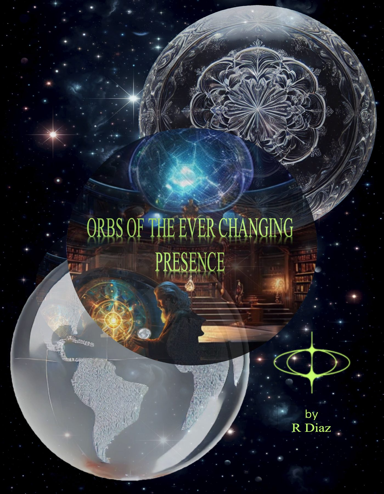

01 · The pace
It matches you, then it waits
A single light holds a steady place beside the road. When the car slows, the light slows. When the car stops, the light stops. It is not ahead on the horizon. It is alongside.
Psykter's Space · the current log
Lights that notice you.

The open conversation this year moved out of the hangar and into the sky over ordinary houses. The reports people are actually filming are not discs on a radar tape. They are balls of light. Some call them plasma. Some call them interdimensional. Orbwatch is the name Psykter's Space uses for the ones that behave as if they know they are being watched.
A porch light does not pace a car. A satellite does not stop when you stop. A flare does not split off a smaller red light and then rejoin. Those three habits are the log. Everything else — planets, aircraft, drones, wishful thinking — gets written down too, because a field journal that only keeps the mystery is not a journal.
01 · The pace
A single light holds a steady place beside the road. When the car slows, the light slows. When the car stops, the light stops. It is not ahead on the horizon. It is alongside.
02 · The split
The bright one swells and sheds a smaller light, often red or amber. The smaller one moves on its own, then returns. Formations of orange lights that seem to produce smaller red ones belong in this row.
03 · The look-back
The camera comes up and the light dims, drops, or leaves. A second camera, started without being pointed at it, still records it. The interesting question is not the gadget. It is whether the light treated the act of watching as an event.
San Antonio · a clear night · no moon to blame
I was not looking for it. The sky west of the house had one steady light, too low for a satellite and too patient for a plane. I counted while I walked to the end of the drive. It did not cross the roof. It held.
When I stopped, it stopped. I said the time out loud so the phone would have it, then I filmed wide before I zoomed. At the zoom the light tightened, brightened, and let go of a smaller amber point that drifted down and left. The bright one remained. I did not follow it past the sidewalk.
In the morning the clip looked ordinary: a light, a hand shaking, a neighbor's porch. The part the clip barely holds is the stop. I stopped. It stopped. That is the whole note. Orbwatch keeps notes like that until the pattern is either boring or undeniable.
Write what you actually saw. Time, town, direction, how long it lasted, and whether it paced you, split, or changed when filmed. A wide clip is worth more than a zoomed one. Say the time out loud while you record.
findme@psykter.net · Psykter's Space on YouTube and @AlienPsykter carry the same name.
Cosmic Guide · Always listening